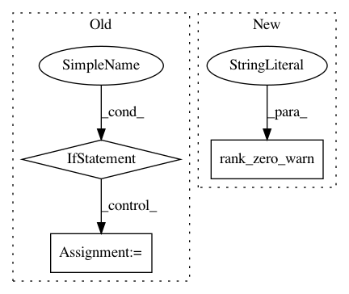

6453091b8ab3713e2d58bad7acc9a4345dc5d10b,pytorch_lightning/metrics/metric.py,MetricCollection,__init__,#MetricCollection#Any#,564
Before Change
def __init__(self, metrics: Union[List[Metric], Tuple[Metric], Dict[str, Metric]]):
super().__init__()
if isinstance(metrics, dict):
// Check all values are metrics
for name, metric in metrics.items():
if not isinstance(metric, Metric):
raise ValueError(
f"Value {metric} belonging to key {name}"
" is not an instance of `pl.metrics.Metric`"
)
self[name] = metric
elif isinstance(metrics, (tuple, list)):
for metric in metrics:
if not isinstance(metric, Metric):
raise ValueError(
f"Input {metric} to `MetricCollection` is not a instance"
" of `pl.metrics.Metric`"
)
name = metric.__class__.__name__
if name in self:
raise ValueError(f"Encountered two metrics both named {name}")
self[name] = metric
else:
raise ValueError("Unknown input to MetricCollection.")
def forward(self, *args, **kwargs) -> Dict[str, Any]: // pylint: disable=E0202
Iteratively call forward for each metric. Positional arguments (args) will
be passed to every metric in the collection, while keyword arguments (kwargs)
After Change
def __init__(self, metrics: Union[List[Metric], Tuple[Metric], Dict[str, Metric]]):
rank_zero_warn(
"This `MetricCollection` was deprecated since v1.3.0 in favor of `torchmetrics.MetricCollection`."
" It will be removed in v1.5.0", DeprecationWarning
)
super().__init__(metrics=metrics)
In pattern: SUPERPATTERN
Frequency: 3
Non-data size: 3
Instances
Project Name: williamFalcon/pytorch-lightning
Commit Name: 6453091b8ab3713e2d58bad7acc9a4345dc5d10b
Time: 2021-03-15
Author: Borda@users.noreply.github.com
File Name: pytorch_lightning/metrics/metric.py
Class Name: MetricCollection
Method Name: __init__
Project Name: williamFalcon/pytorch-lightning
Commit Name: 6453091b8ab3713e2d58bad7acc9a4345dc5d10b
Time: 2021-03-15
Author: Borda@users.noreply.github.com
File Name: pytorch_lightning/metrics/compositional.py
Class Name: CompositionalMetric
Method Name: __init__
Project Name: williamFalcon/pytorch-lightning
Commit Name: 221c4a0ba261e4a499303aa9d9f63da63e65daee
Time: 2021-01-27
Author: skaftenicki@gmail.com
File Name: pytorch_lightning/metrics/functional/classification.py
Class Name:
Method Name: auc